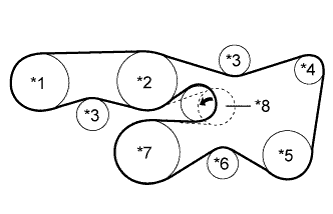

ПРИВОДНОЙ РЕМЕНЬ > УСТАНОВКА |
| 1. УСТАНОВИТЕ ПОЛИКЛИНОВОЙ РЕМЕНЬ ВЕНТИЛЯТОРА И ГЕНЕРАТОРА |
|  |
Установите поликлиновой ремень на каждую деталь.
| *1 | Лопастной насос |
| *2 | Насос охлаждающей жидкости |
| *3 | Опорный ролик № 2 |
| *4 | Генератор |
| *5 | Компрессор системы кондиционирования или опорный ролик |
| *6 | Опорный ролик № 1 |
| *7 | Коленчатый вал |
| *8 | Натяжитель поликлинового ремня |
Поверните натяжитель ремня против часовой стрелки и выньте штифт.
Убедитесь в том, что приводной ремень правильно располагается в углублениях шкива.